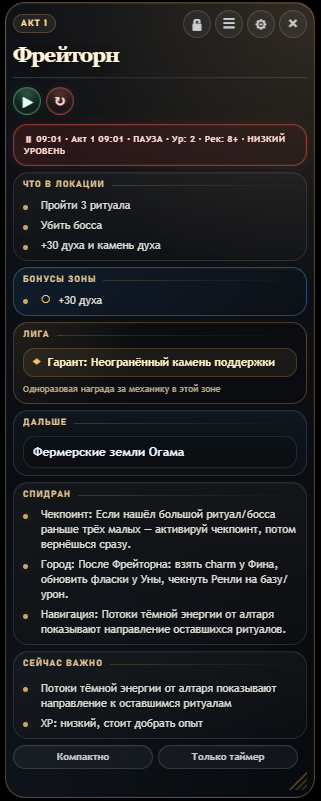
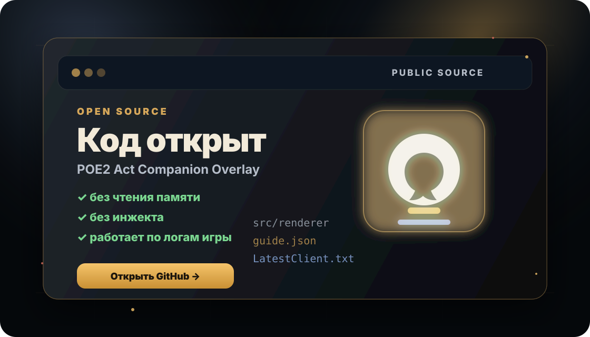
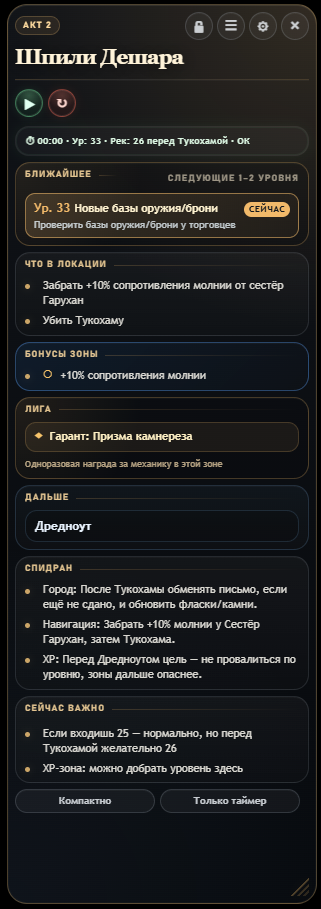

Текущая зона по логам
Оверлей читает LatestClient.txt, распознаёт зоны русского и английского клиента и обновляет локацию без вмешательства в игру.
POE2 Act Companion Overlay читает лог-файл игры, определяет текущую зону и показывает памятку “Что в локации”, следующий переход, скипы, бонусы, статус уровня, таймер забега и время актов — без инжекта в клиент игры.

зачем оно нужно
Вся рутина актов собирается в один боевой HUD: что важно в зоне, что забрать, что скипнуть, куда идти дальше, когда добрать уровень и сколько времени ушло на акт.
Оверлей читает LatestClient.txt, распознаёт зоны русского и английского клиента и обновляет локацию без вмешательства в игру.
Не трекер действий, а обычная памятка по зоне: важные награды, боссы, переходы и то, что не стоит забыть.
Отдельная вкладка с постоянными наградами: пассивки оружия, резисты, дух, здоровье, мана и выборные бонусы.
Общее время, время текущего акта, таблица времени актов, итоги забега и режим “Только таймер” для опытных игроков.
Статус уровня подсвечивается прямо в строке таймера: низкий уровень, ок или неизвестно. Плюс ближайшие важные уровни и power spikes.
Городские планы, “если по пути”, навигация, скипы лишней зачистки и короткие заметки для быстрого прохождения.
Отдельное окно с маршрутом, бонусами, таймером, временем актов, напоминаниями и итогами забега.
Приложение проверяет GitHub Releases, скачивает обновление внутри приложения и ставит его только после подтверждения.
демонстрация
Короткая видео-демонстрация текущей версии POE2 Act Companion Overlay: как выглядит основной overlay, таймер, компактный режим и подробная панель прямо в работе.
Смотри прямо на сайте или открой ролик на YouTube.
open source
Исходники POE2 Act Companion Overlay открыты на GitHub: можно посмотреть код, проверить как работает приложение, предложить правки или просто убедиться, что оверлей читает только лог-файлы игры и не лезет в клиент.

как выглядит
Актуальный вид основного оверлея, подробной панели, бонусов актов, режима “Только таймер” и компактного режима в текущей beta-версии.

Текущая зона, памятка “Что в локации”, следующий переход, скипы, важные подсказки и статус уровня прямо поверх игры.
beta build
Все сборки публикуются на GitHub Releases. Основная кнопка ниже сама подставляет актуальный installer из последнего релиза и ведёт прямо на скачивание .exe.
После установки выбери лог-файл игры в настройках. Дальше приложение само проверит новые версии и предложит обновиться через GitHub Releases.
обновления
Приложение само проверяет наличие обновлений. Если новая версия доступна, оно покажет окно, скачает обновление внутри приложения и предложит установить его только после подтверждения.
При запуске и вручную из настроек приложение проверяет последний релиз на GitHub.
Обновление скачивается внутри приложения. Прогресс отображается в окне обновления и настройках.
Ничего не ставится молча: установка начинается только после кнопки “Установить и перезапустить”.
Если открыть приложение, а потом включить VPN, проверка GitHub Releases может отвалиться. В этом случае в блоке обновлений может появиться статус “Не удалось проверить обновления”, а вместо автообновления приложение предложит открыть релиз и скачать установщик вручную. Это не проблема версии: обновлятор просто не смог стабильно достучаться до GitHub через текущий VPN-маршрут. Отключи VPN и нажми “Проверить обновления” ещё раз либо скачай свежий установщик вручную через кнопку “Последний релиз”.
установка
Нажми “Скачать через GitHub” — сайт сам подставит installer .exe из последнего GitHub Release.
POE2-Act-Companion-Overlay-Setup-*.exeОткрой скачанный файл и пройди обычную установку в Windows.
После первого запуска открой настройки и укажи путь к игровому логу.
Path of Exile 2/logs/LatestClient.txtОверлей начнёт обновляться по логам и сразу покажет нужный контекст по текущей зоне.
безопасность
POE2 Act Companion Overlay — локальный overlay-помощник. Он не вмешивается в клиент Path of Exile 2 и работает через обычный лог-файл игры.
что приложение не делает
Overlay определяет текущую зону по строкам из Client.txt / LatestClient.txt
и показывает подсказки поверх экрана. Он не читает память игры, не перехватывает сеть и не выполняет действия за игрока.
почему Windows может ругаться
Приложение пока не подписано платным цифровым сертификатом. Из-за этого Windows SmartScreen и некоторые антивирусы могут относиться к installer-файлу осторожно, особенно пока проект новый и у файла мало скачиваний.
Это не означает автоматически, что внутри вирус, но я не прошу отключать антивирус или запускать то, чему вы не доверяете. Если есть сомнения — лучше проверить файл самостоятельно, дождаться следующих версий или не использовать приложение.
откуда скачивать
Все релизы публикуются через GitHub Releases. Лучше скачивать только верхний релиз с пометкой Latest и не использовать перезаливы со сторонних сайтов.
Для каждого релиза можно указывать SHA256-хэш installer-файла, чтобы пользователь мог проверить, что файл не был подменён.
Get-FileHash "POE2-Act-Companion-Overlay-Setup-*.exe" -Algorithm SHA256
кто делает проект
POE2 Act Companion Overlay — независимый community-проект от UmbraMalik.
Проект делает один человек. В некоторых случаях я использую AI-инструменты и фидбек игроков, чтобы быстрее находить ошибки, править зоны, структурировать данные и улучшать overlay.
Это не официальный инструмент Grinding Gear Games и не коммерческий продукт.
сообщество
поддержали проект
Если отправляешь поддержку и хочешь попасть сюда — укажи ник в комментарии к переводу или донату. Добавляю вручную после проверки. Формат в рамке: ник — сумма.
поддержка
Доступ к beta не планируется закрывать за донатом. Поддержка — это просто “спасибо” за время, нервы, правки под русский клиент и вечную борьбу с Electron.
добровольная поддержка
Можно перевести по QR через Альфа-Банк или отправить донат через DonationAlerts. Это не покупка доступа и не подписка — просто способ сказать “спасибо” и помочь развитию проекта.
Альфа-Банк
Перевод по QRОтсканируй QR-код в приложении банка — реквизиты подтянутся автоматически. Любая сумма добровольная.
DonationAlerts
Поддержать через донатПодойдёт, если удобнее поддержать через DonationAlerts. Откроется отдельная страница доната.
Открыть DonationAlerts ↗Если хочешь попасть в рамку поддержавших проект — укажи свой ник в комментарии к переводу или в сообщении к донату.